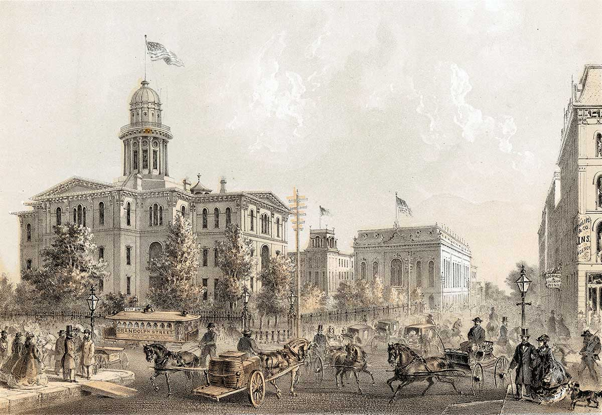
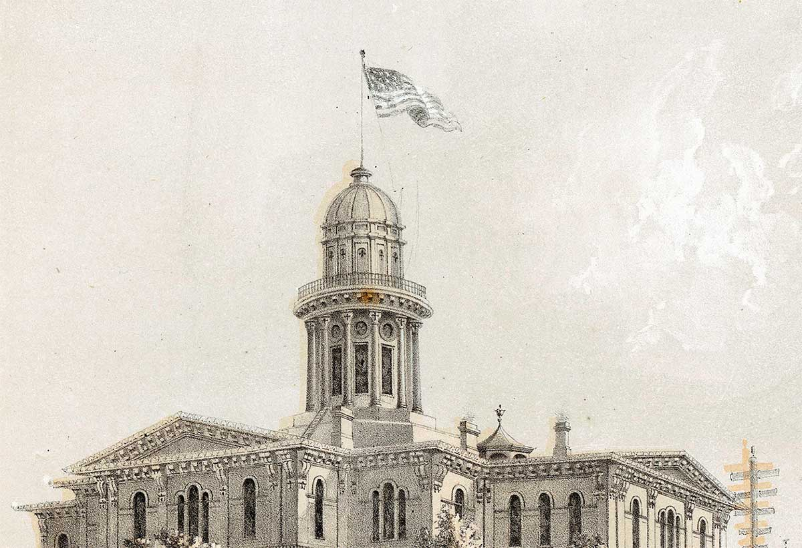
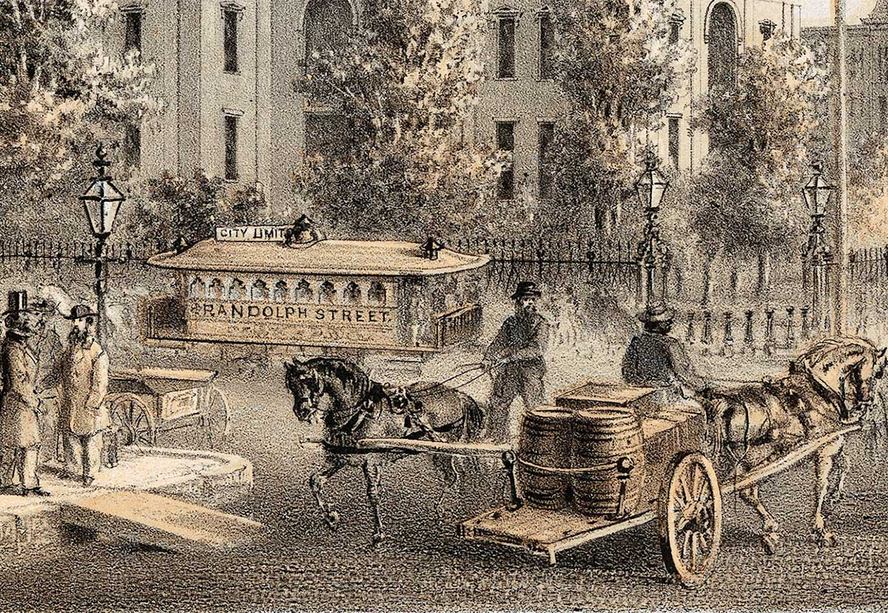
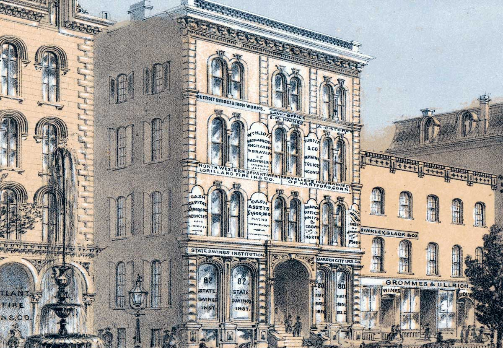
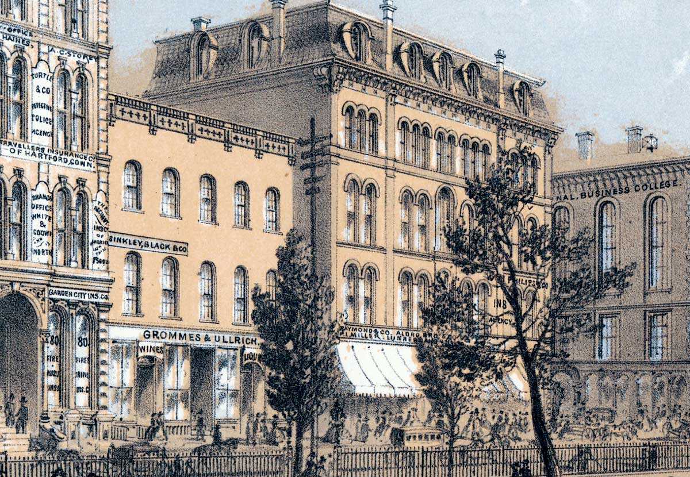
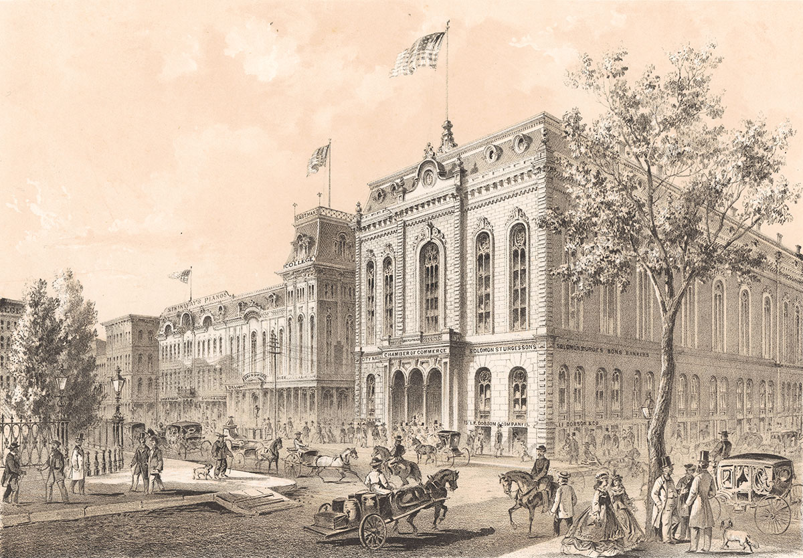
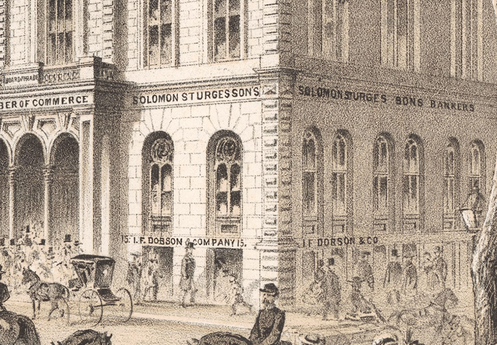
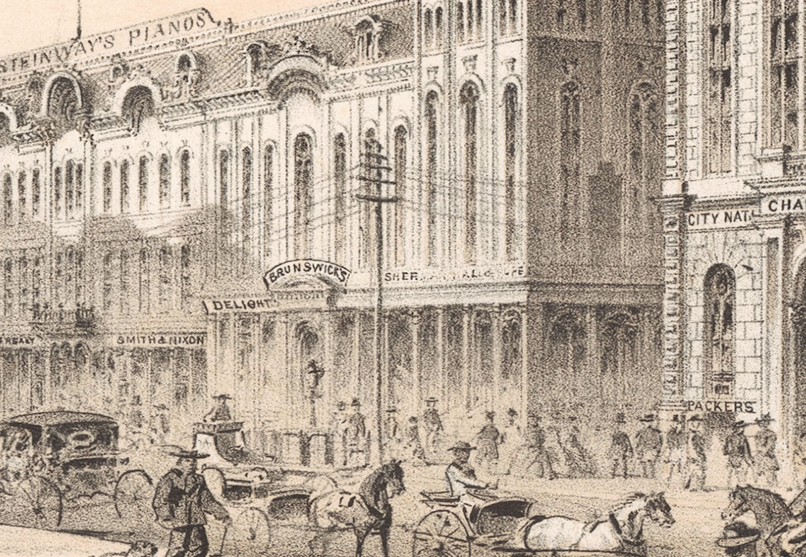

Tour The Heart of Chicago
Beautiful Court House Square, the center of a vibrant city.
Court House Square
-

Court House Square
The Court House, located at LaSalle and Randolph Streets, can be reached by one of Chicago’s modern railway cars. Built in the 1850s, the handsome structure houses many city and county government offices. Its elegant cupola can be seen for miles.
iChi-62080
-

Court House Square Cupula
Added in 1858 and rising 125 feet above the ground, the cupola makes the Court House Chicago’s tallest building. Chicago’s heavy, clay-like soil makes construction difficult.
iChi-62080d1
-

Court House Square Railway Cars
First introduced in 1858, horse-drawn cars run on iron tracks and move twice as fast as walking. They operate throughout Chicago’s central district but often create traffic jams.
iChi-63069
LaSalle Street from Court House Square
-

LaSalle Street from Court House Square
Before leaving the Court House, take a few minutes to stroll through its lovely grounds for a soothing respite from the busy city. Across LaSalle Street stand two well-known Chicago enterprises: the State Savings Institution and Grommes & Ullrich.
iChi-i63070
-

State Savings Institution
One of Chicago’s most reliable banks, State Savings survived the economic panic of 1861 caused by the outbreak of the Civil War. Other banks weren’t as fortunate.
iChi-i63071
-

Grommes & Ullrich
Grommes & Ullrich, makers of fine whisky and wines, use this building as a storage vault. The Board of Education uses the upstairs rooms for meetings.
iChi-i63072
Chamber of Commerce
-

Chamber of Commerce
This building, located on the southeast corner of LaSalle and Washington Streets, faces Court House Square. Built by the Chicago Board of Trade for banks and insurance companies, the structure is wired for modern telegraph service.
iChi-63073
-

Solomon Sturges’ Sons Bankers
The sons of a successful grain merchant recently founded this firm. They hope to make a fortune!
iChi-63074
-

Telegraph
This marvel of modern communication came to Chicago in 1848, the same year the city’s first railroad, the Galena & Chicago Union, began operations. The telegraph connections link Chicago to older eastern cities and new western markets.
iChi-63075